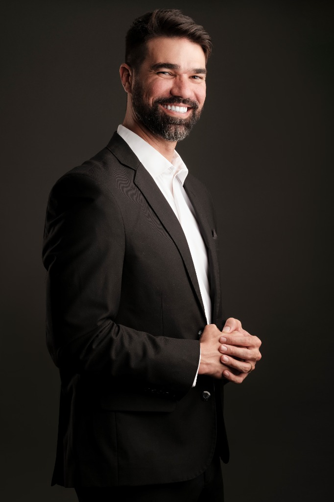
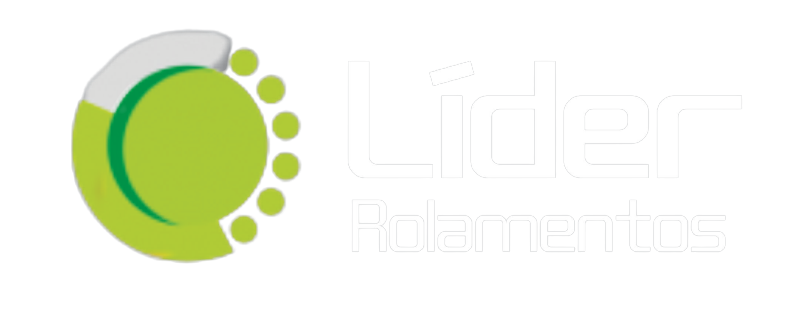
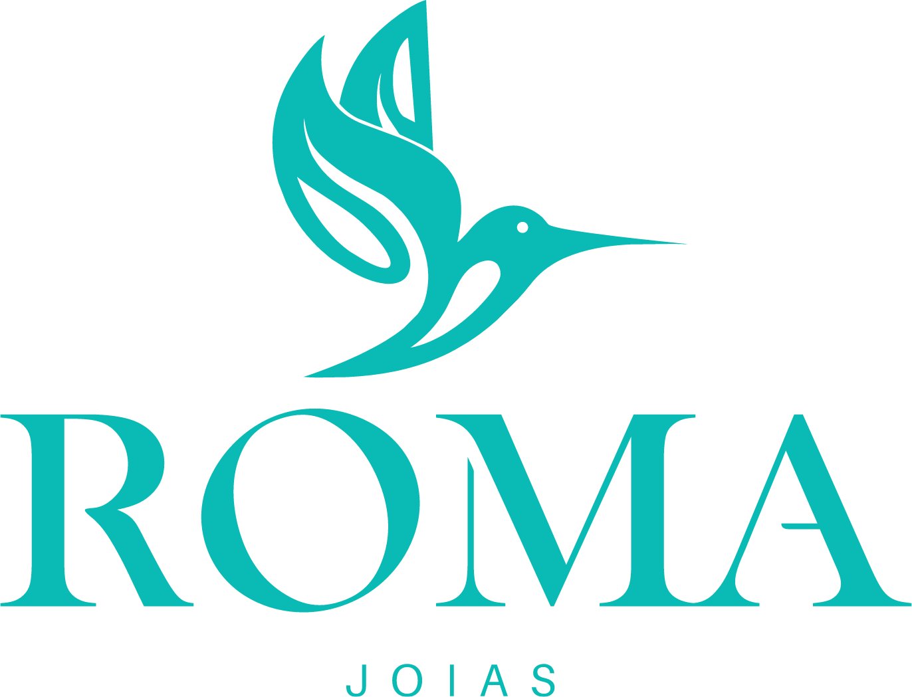
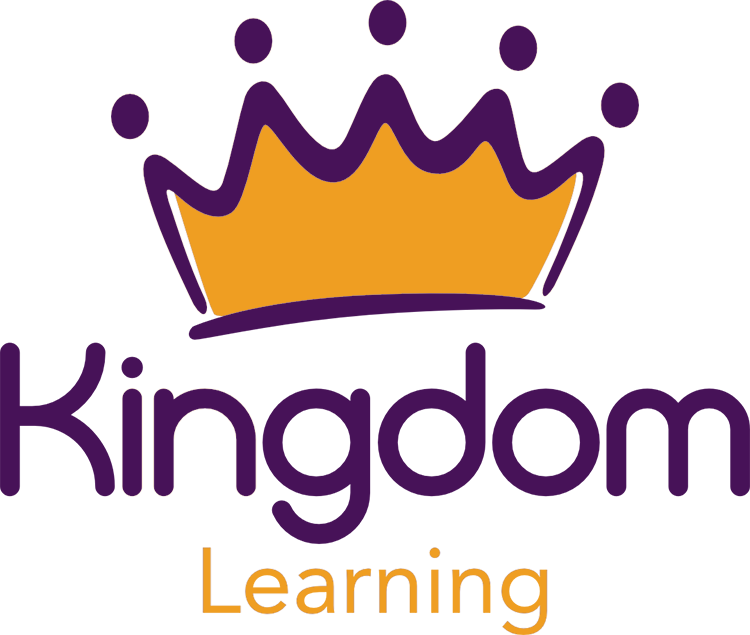
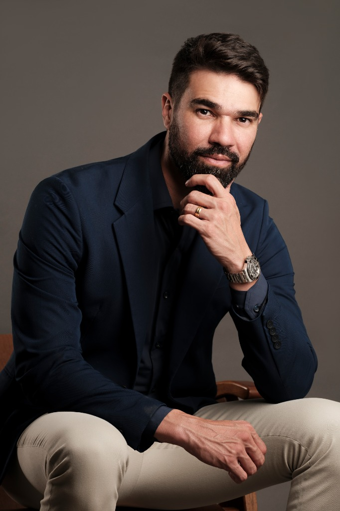

Inteligência Emocional para Alta Performance
Como transformar autoconhecimento em decisão melhor sob pressão — no dia a dia da liderança e do negócio.
Gustavo Sampaio leva ao palco o que aprendeu em mais de 3.300 horas de mentoria com donos, sucessores e lideranças-chave: liderança, inteligência emocional e sucessão tratadas como método. O público sai com decisão tomada — não com frase de efeito.
Presencial e online · Eventos em todo o Brasil

Indústria, agronegócio, varejo, serviços e cooperativas — empresas que já levaram o Gustavo para o palco ou para dentro de casa.




Toda convenção termina com a plateia de pé. A pergunta que importa é o que sobra na segunda-feira — quando o dono continua sendo o gargalo de toda decisão, o sucessor continua sem autonomia real e o time continua esperando ordem para agir.
É esse ponto que o Gustavo trabalha há mais de oito anos à frente da Febracis Goiânia: reduzir centralização, preparar quem vem depois e transformar comportamento em resultado que aparece no número. A palestra não substitui esse processo — ela abre a conversa dentro da empresa e dá o primeiro passo concreto.
Empresas não crescem acima da maturidade emocional de quem as lidera. Gustavo Sampaio
Cada tema é ajustado em recorte, profundidade e duração de acordo com o público e o objetivo do seu evento.
Como transformar autoconhecimento em decisão melhor sob pressão — no dia a dia da liderança e do negócio.
O que trava a execução de um time que sabe o que precisa fazer e mesmo assim não faz. Ferramentas para destravar.
Como desenvolver sucessores e times de alta performance sem centralizar toda decisão em uma pessoa.
Preparar a próxima geração sem sacrificar governança, relação familiar ou resultado do negócio.
Conversa direta sobre posicionamento, disciplina e liderança — dentro de casa e dentro do negócio.
Conte o contexto do evento e o momento da empresa. O recorte é montado especificamente para esse público.
Para convenções, congressos, kickoffs comerciais e encontros de liderança. Tema e recorte definidos com você antes do evento.
Quando o objetivo é o time sair com plano escrito, e não só com a mensagem. Formato e carga horária sob consulta.
Para times distribuídos, eventos híbridos ou encontros de rede que acontecem fora de um auditório.

Gustavo Sampaio é empresário, estrategista, mentor e conselheiro de empresários e negócios familiares. Há mais de oito anos é diretor e sócio da Febracis Goiânia, onde conduz projetos estratégicos de 12 meses diretamente com donos, sucessores e lideranças-chave.
Sua atuação se concentra em sucessão, maturidade emocional, comunicação, governança, tomada de decisão e delegação — os pontos em que uma empresa costuma travar antes de travar no número. Além da Febracis, é sócio do Clube de Permuta Goiânia, plataforma B2B com mais de 100 empresários associados, e da CuraVox Gospel.
Ele usa essas travessias no palco pelo motivo mais direto possível: nenhuma delas se faz sem preparo, estratégia e coragem — e nenhuma sucessão, também.
UPIS. Antes disso, formação técnica em processamento de dados e gestão de TI na administração pública.
Mentorias executivas, diagnósticos de liderança e programas de people analytics para empresários, negócios familiares e produtores rurais.
Florida Christian University.
Mais de 2.000 pessoas em Goiânia, ao lado de Camila Vieira — uma das maiores experiências de desenvolvimento humano já realizadas no estado.
Sócio da gravadora CuraVox Gospel e líder do Ministério Escola de Líderes, na Family Church.
Realização ao lado de Paulo Vieira e Camila Vieira.
Você fala com o time comercial pelo WhatsApp e conta o contexto: público, data, cidade e objetivo do evento.
Definimos juntos tema, recorte, formato — presencial ou online — e a duração que faz sentido para esse público.
Fechados os detalhes contratuais, você recebe o briefing técnico com tudo que precisa estar pronto no local.
Os dois formatos estão disponíveis. Decidimos junto com você o que faz mais sentido para o seu evento e para o seu público.
Entre 45 e 90 minutos, no formato mais comum. Workshops e imersões de meio período ou dia inteiro também podem ser combinados sob consulta.
Sim. Todos os temas são ajustados em recorte, profundidade e duração — e, quando o contexto pede, o recorte é construído do zero para aquele evento.
Varia conforme formato, duração, cidade e data do evento. O orçamento é sempre personalizado — fale com o time comercial para receber uma proposta.
Sim. O Gustavo já palestrou em diversas capitais e cidades pelo Brasil, incluindo São Paulo.
Sim. Depois da confirmação você recebe um briefing técnico com tudo que precisa estar disponível no local do evento.
Conte o contexto, o público e a data. O time comercial retorna com formato, disponibilidade e proposta.
Falar com o comercial no WhatsApp